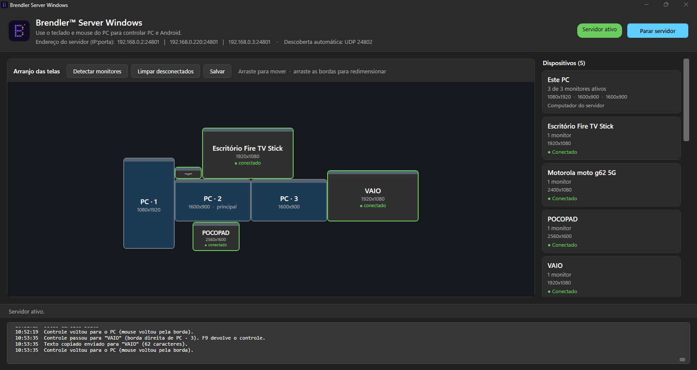
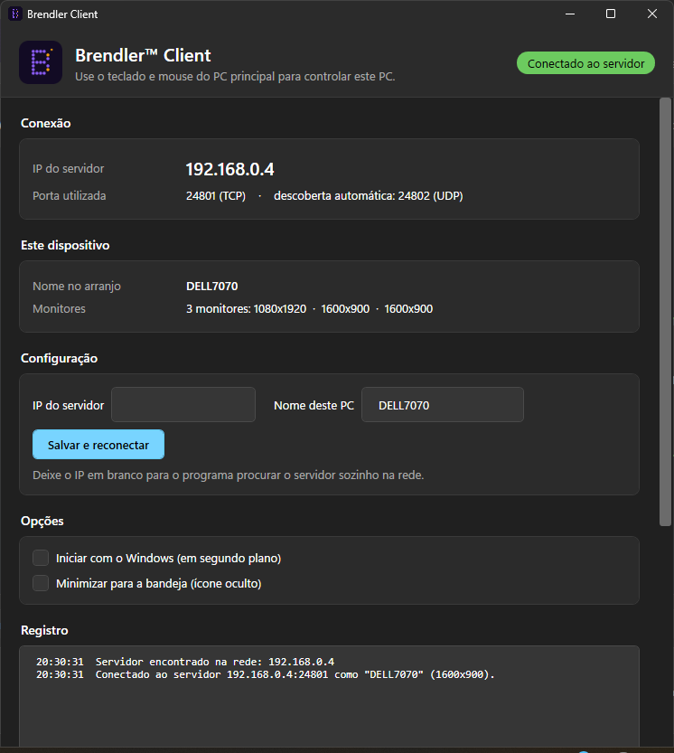
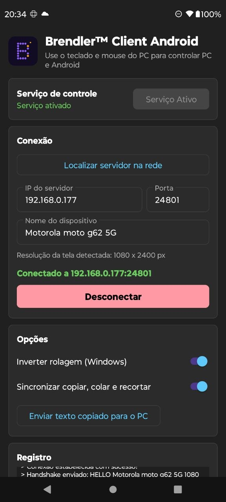
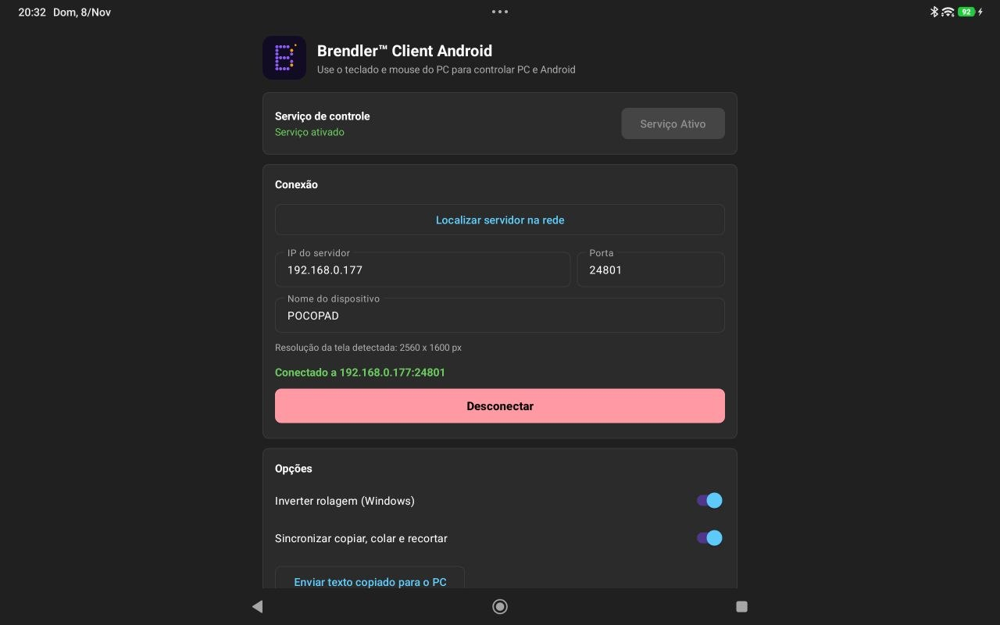
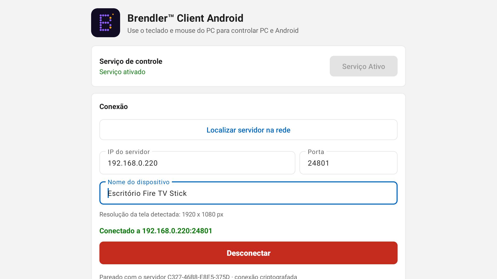

Um mouse e um teclado para todos os seus aparelhos
KVM por software para Windows e Android, com suporte parcial ao Fire TV Stick. Leve o cursor até a borda da tela e passe a controlar outro PC, celular, tablet ou TV, sem trocar de mouse nem de teclado.
Versão de testes gratuita. Os programas ainda não são assinados digitalmente: o Windows pode mostrar um aviso na primeira vez (veja as perguntas frequentes).
O que ele faz
Mouse entre aparelhos
Cursor, cliques e rolagem passam pelas bordas das telas, como se tudo fosse uma mesa só.
Teclado junto
O que você digita vai para o aparelho onde o mouse está, com atalhos como Ctrl+C e Ctrl+V.
Copiar e colar entre as telas
Copie texto num aparelho e cole em outro.
Arranjo visual das telas
Arraste e redimensione os monitores com o mouse para combinar com a sua mesa. Monitores e resolução são detectados sozinhos.
Conexão automática
Os aparelhos encontram o servidor na rede local, sem digitar IP.
Conexão protegida
Tudo trafega com TLS e cada aparelho é pareado uma vez com um código de 6 dígitos.
Fire TV Stick (parcial)
Controle a TV com o mouse e o teclado do PC: clique nos itens da tela inicial, roda e setas para percorrer as listas, botão direito para voltar e digitação nas buscas. Em apps como a Netflix e o Prime Video, a roda e as setas movem o destaque e o clique abre o item.
Como começar
- No PC principal, abra o BRENDLERServer e clique em Iniciar servidor.
- Pareie cada aparelho uma única vez com o código de 6 dígitos que o servidor mostra.
- Nos outros PCs, abra o BrendlerClient. No Android, instale o APK, ative o serviço de acessibilidade e toque em Conectar. No Fire TV Stick, a instalação é feita uma vez pelo ADB do PC (passo a passo no README).
- Arraste as telas para a posição certa no servidor e leve o mouse até a borda.
Telas do programa





Perguntas frequentes
É gratuito?
Por enquanto, sim: esta é uma versão de testes. Estamos avaliando um modelo com versão gratuita e versão Pro. Conte no formulário o que você acharia justo.
É seguro?
A comunicação usa TLS e o pareamento por código impede que um servidor falso na rede seja aceito. Ainda não assinamos os programas digitalmente, então o Windows pode mostrar o aviso “O Windows protegeu o computador”: clique em Mais informações e depois em Executar assim mesmo. Cada versão publica o código de verificação (SHA-256) dos arquivos, para você conferir se o download está íntegro.
Que dados vocês coletam?
Os programas não enviam dados para os desenvolvedores. O texto copiado, as teclas e os movimentos do mouse trafegam só pela sua rede local, criptografados.
Funciona pela internet?
Não. Todos os aparelhos precisam estar na mesma rede local.
Quais são os requisitos?
Windows 10 ou 11 (64 bits), Android 7.0 ou mais novo e, para a TV, Fire TV Stick com Fire OS 7 ou mais novo.
O que ele não faz?
Copiar e colar funciona só com texto. Ctrl+Alt+Del sempre age no PC principal. No Android, alguns apps (jogos, campos de senha, apps protegidos) podem ignorar os toques e o texto, porque o controle usa o serviço de acessibilidade do sistema.
Funciona no Fire TV Stick?
Sim, de forma parcial. Funcionam: o ponteiro do mouse, o clique nos itens da tela inicial do Fire TV e de apps como o YouTube, a roda do mouse e as setas do teclado para percorrer as listas, o botão direito como Voltar e a digitação nas buscas (inclusive da Netflix e do Claro tv+). Em apps feitos só para o controle remoto, como a Netflix e o Prime Video, não dá para escolher um item apontando com o mouse: a roda ou as setas movem o destaque e o clique abre o item em destaque. Em alguns menus (como o lateral do Claro tv+), o primeiro clique leva o destaque até o item e o segundo abre. Nesses apps, o ç e as letras acentuadas saem como a letra simples, e arrastar não funciona. A instalação precisa do ADB no PC do servidor e da Depuração ADB ligada na TV.
Ajude a decidir o futuro do programa
Responda um formulário rápido: o que funcionou, o que faltou e quanto você pagaria por uma versão Pro.
Responder o formulário